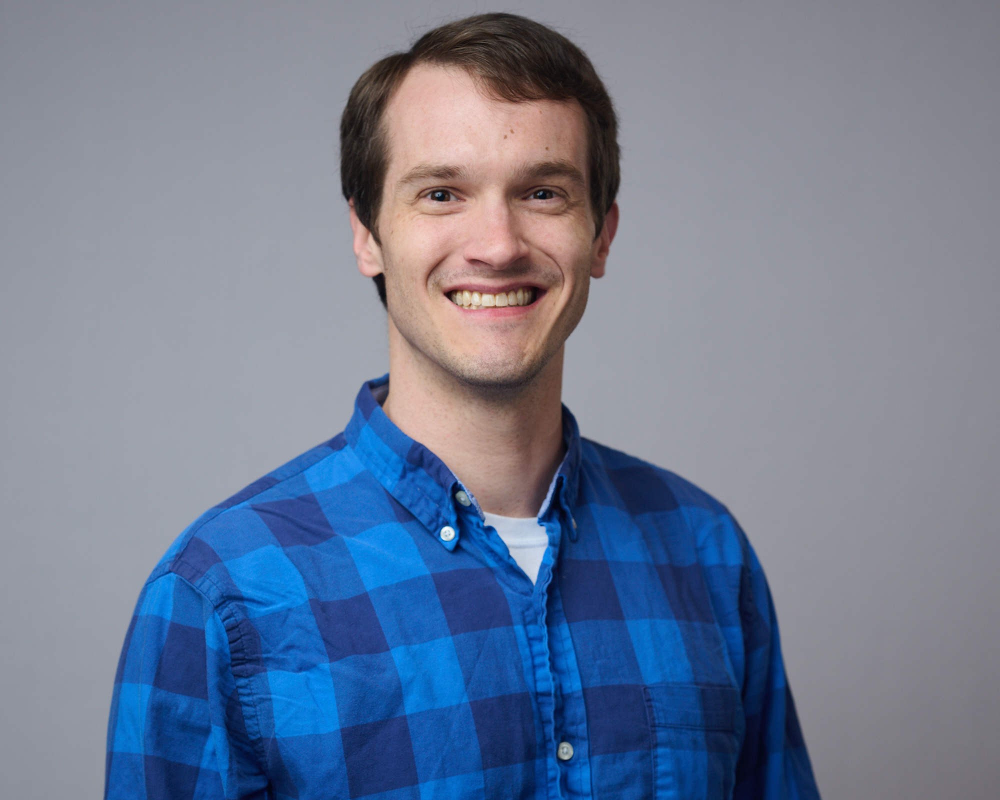

Bio

I am a theoretical physicist interested in general relativity and relativistic astrophysics, with a particular focus on black holes. I am a postdoctoral research associate in the Department of Physics at the University of Illinois Urbana-Champaign, where I work in Nico Yunes's group. I am an inaugural Simons Collaborative Postdoctoral Fellow in the Simons Collaboration on Black Holes and Strong Gravity. From 2023 to 2026, I was a postdoctoral researcher at Vanderbilt University as part of the Initiative for Gravity, Waves, and Fluids. I received my Ph.D. from Columbia University in 2022 and my undergraduate degree from Harvard University in 2016. For more information, please see my latest CV.
You can read more about my research here.
Research
For a full description of my research, publications, and talks, please consult my latest CV (November 2026).
Publications
My papers are listed on my Google Scholar profile and INSPIRE page, as well as on the NASA ADS abstract service and the arXiv.
Overview
I work in general relativity, with an emphasis on black hole perturbation theory. My program has three strands: (i) reconstruction of gravitational perturbations, (ii) exploration of new symmetries, and (iii) lensing and photon shell dynamics. Together, these threads reveal how black holes respond to disturbances and connect theory to predictions for gravitational-wave detectors and horizon-scale images.
Metric Reconstruction
Metric reconstruction is the problem of recovering the perturbation of the metric from the perturbation of the Weyl scalars, i.e., turning curvature data back into data about the metric itself.
We carried out the
complete reconstruction of metric perturbations on spinning black holes, giving explicit formulas for the metric components.
This work was selected as a Wolfram Community Staff Pick, and the accompanying Mathematica notebooks are available on GitHub.
We then extended this framework to black hole spacetimes with nonzero cosmological constant, preserving the essential structure while handling the added complexity.
Ongoing work will apply this procedure to extremal (rapidly spinning) black holes and investigate new classes of perturbations in this regime.
These results provide tools for numerical studies and for extending black hole perturbation theory beyond first order.
Symmetries and Tidal Response
Tides quantify how an object deforms in an external gravitational field. Black holes have a surprising property: for static external fields, they exhibit no tidal response, i.e., their "Love numbers" vanish. I study the symmetries behind this behavior and how those symmetries constrain perturbations across spins and dimensions.
For scalar (spin-0) perturbations of non-spinning black holes, we uncovered ladder symmetries with a clear geometric origin that account for the vanishing Love numbers.
We used the same methods to clarify the structure of quasinormal modes in de Sitter space.
Building on that, we identified additional symmetries for electromagnetic (spin-1) and gravitational (spin-2) perturbations that likewise exclude a static tidal response.
These ideas further extend to higher dimensional black holes, where they predict exactly which Love numbers vanish (not all).
Lensing and Photon Shell Dynamics
The photon shell is the region around a spinning black hole where light can orbit (unstably) without escaping or being captured.
It strongly shapes the lensing of light by the black hole, most notably by producing the photon ring, a bright, thin ring in black hole images formed by light rays that linger near the black hole for many orbits before escaping.
To study this region and its effects, I have helped guide the development of two tools with former Vanderbilt graduate student
Trevor Gravely.
The first tool is a JavaScript ray tracer
for light rays around spinning black holes.
Some of the animations we made can be viewed here.
We used this tool to develop visualizations of the spacetime around a black hole as part of the
Black Hole Explorer initiative,
which seeks to image the photon ring around supermassive black holes.
The second tool is an interactive app called
Black Hole Vision, now available on iOS, which simulates real-time gravitational lensing by a rotating black hole using the device's front and rear cameras. A paper describing the physics and technical details can be found here.
More recent work studies the emergence of chaos and fractal structure in the photon ring.
When the spacetime is perturbed, the crisp boundary between light that escapes to infinity and light that falls into the black hole wrinkles into a fractal, signaling the onset of chaos.
We developed two animations, one showing
the emergence of chaos near the photon shell,
which results in a fractal phase-space structure, and another exhibiting
the self-similarity of the fractal structure.
Prior Work
During my Ph.D., I studied a model of black hole formation in a de Sitter background in an extension of general relativity known as massive gravity.
I also explored the dynamics of a black hole moving through a uniform magnetic field, exploring via simulations the chaotic trajectories of charged particles and the possibility of such a black hole acquiring an electric charge.